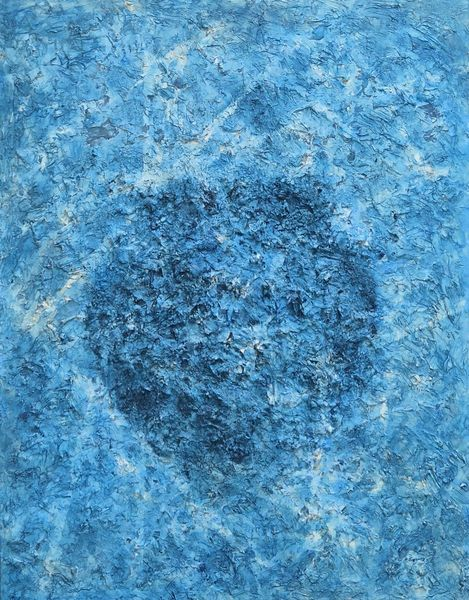
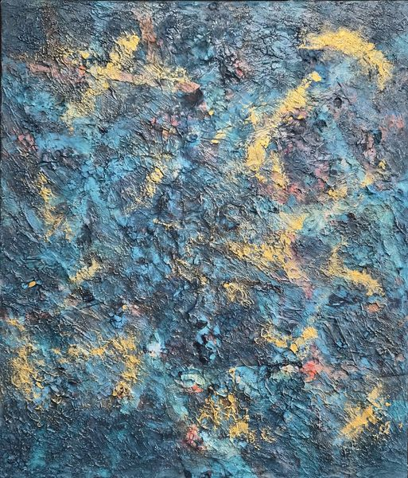
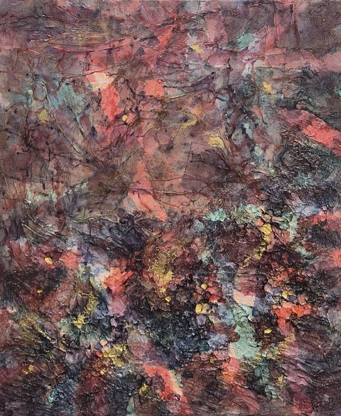
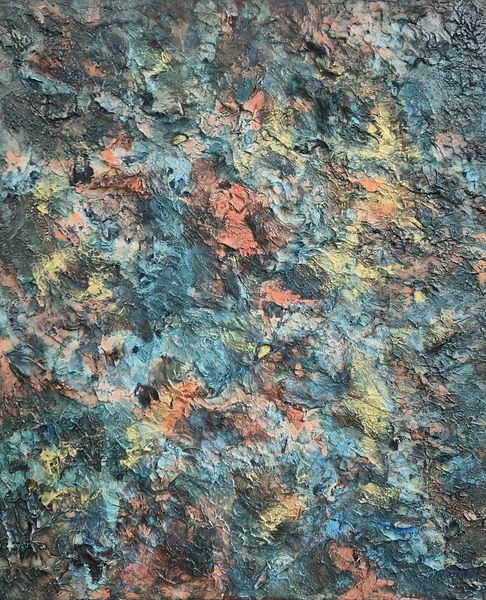
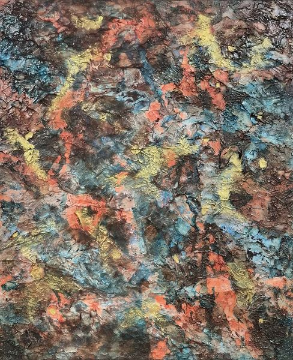
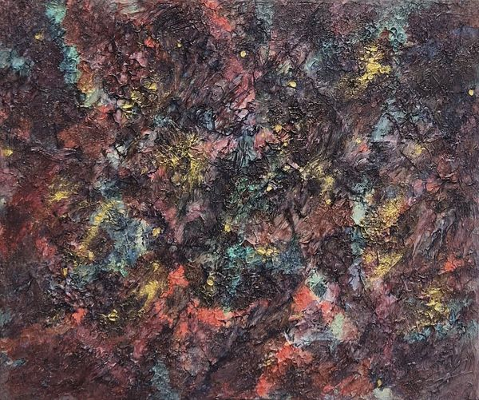
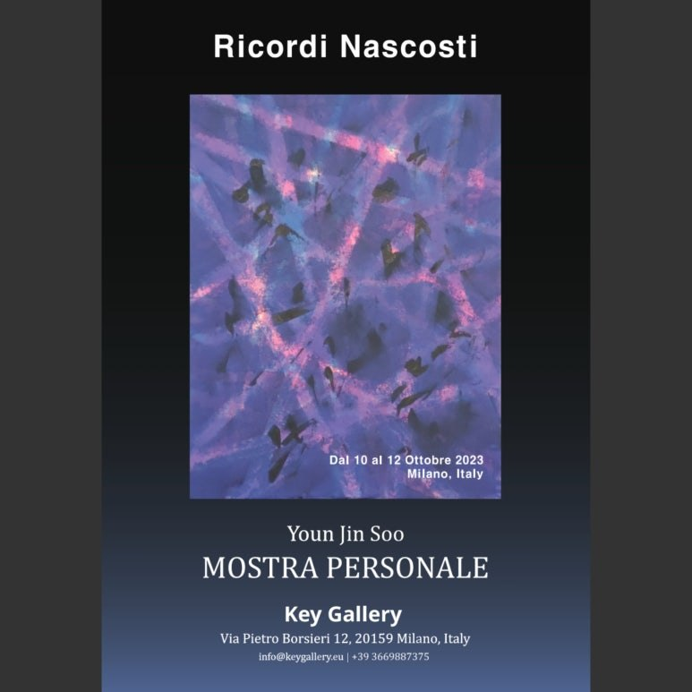
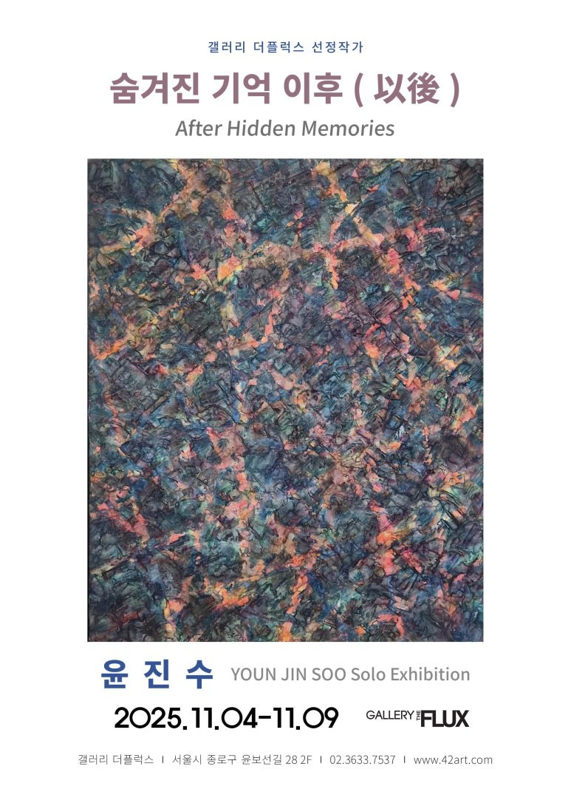
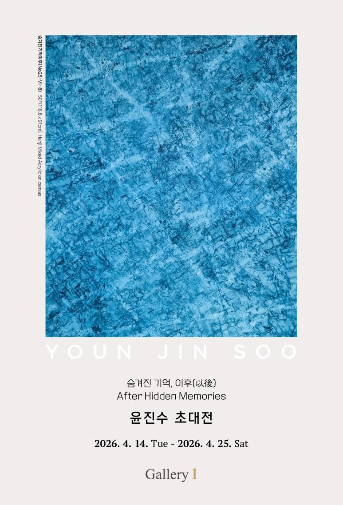

Dense, tactile canvases built from hanji and acrylic, tracing the residue that time leaves on surface and memory — from Seoul to Milan and the Carrousel du Louvre in Paris.
Youn Jin Soo (b. 1975, Suwon, Korea) is a Korean painter and classically trained pianist based in Seoul. Since 2019 his ongoing series Hidden Memories has explored the residue that time leaves on surface and recollection — built from layers of hanji, traditional Korean mulberry paper, fused with acrylic into dense, weathered fields of colour and texture.
His work has travelled from the National Assembly Art Gallery in Seoul to the Carrousel du Louvre in Paris, where it received the Prix de la Critique in 2024, and from a solo exhibition at Key Gallery in Milan to invitational exhibitions across Seoul.
"I once woke from twenty hours of sleep, unable to tell whether I had crossed from dream into reality or back again. What I had seen would not return to memory — and yet I was certain it was still there, hidden somewhere beneath the surface of forgetting. Memory does not disappear; it only hides, reshaped each time we are not looking, endlessly recreated by every experience that passes through it. Recently, the sight of an old arcade machine outside a stationery shop returned to me a memory buried for forty years, though I could barely recall what had happened the week before. My waking self remains fixed here, in this moment — but my memory is free to travel however far into the past it needs, peeling back one layer of time after another to reach what was never lost, only hidden."
« Je me suis un jour réveillé après vingt heures de sommeil, incapable de dire si j'étais passé du rêve à la réalité ou l'inverse (...) Mon moi éveillé reste fixé ici, dans cet instant — mais ma mémoire, elle, est libre de voyager aussi loin que nécessaire dans le passé, ôtant une à une les couches du temps pour atteindre ce qui n'a jamais été perdu, seulement caché. »
Memory is only ever hidden, never lost. Each experience reshapes what is stored within it, endlessly recreating itself without our awareness. If every memory could be rewound far enough, could it not lead back to the very moment the universe began? That journey is impossibly distant — reaching it means peeling away time, layer by layer, since time itself is what conceals memory. My waking self remains fixed in the present, in this place and this moment; but memory carries no such limit — it is free to travel as far into the past as it needs.
La mémoire n'est jamais perdue, seulement cachée. Chaque expérience la transforme, la recréant sans cesse à notre insu. Si l'on pouvait remonter toute mémoire assez loin, ne reviendrait-on pas jusqu'à l'instant même de la naissance de l'univers ? Ce voyage serait d'une distance impossible — pour l'atteindre, il faut ôter le temps, couche après couche, car c'est le temps lui-même qui dissimule la mémoire. Mon moi éveillé reste fixé dans le présent, en ce lieu et cet instant ; mais la mémoire, elle, ne connaît pas une telle limite : elle est libre de voyager aussi loin que nécessaire dans le passé.








